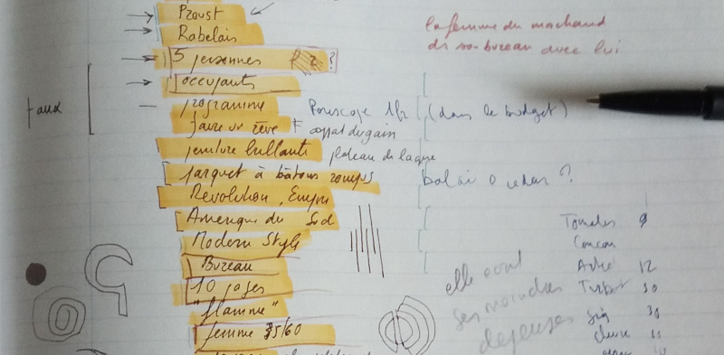

The Project
eXtreme Design a Brief Introduction
Ontology Design Patterns are building blocks for ontologies. They offer answers to common modeling problems. Their use favors the ontology's reusability and ensures a high degree of overall ontology quality.
Reusing ODPs is a basic concept and explicit action of the ontology design process known as eXtreme Design (XD). Following the start of the project, XD is carried out by repeating a series of steps:
- Gathering the requirements that serve as the basis for design and testing;
- Locating and implementing the ODPs that best meet the requirements;
- Conducting tests and validating the produced ontology components;
- Taking care of component integration.
1.Requirements Engineering
User stories lead to requirements collection. A user story is a series of phrases that illustrates the types of facts that the final knowledge graph must encode.
User stories can have a priority level, a title, and an ID attached to them. The title or ID can be used to describe potential narrative dependencies, which means that the analysis of one tale is dependent upon the analysis of other stories. The order in which stories are handled depends on their priority level.
2.Competency Questons (CQ)
To generalize a user narrative is to determine the key ideas it illustrates. Generalizing the user stories yields one or more competency questions (CQs). CQs are the natural language versions of the queries applicable to the resulting knowledge graph.
Along with CQs, it is possible to identify general constraints that may express possible inferences or other rules that apply to the story concepts. General constraints expressed in natural language correspond to formal axioms the ontology will include.
3. Matching CQs to ODPs
Matching CQs to Ontology Design Patterns (ODPs) is a crucial step in XD. A cohesive group of CQs, or CQs dealing with the same modeling difficulties (e.g. material transformation), is chosen at each iteration.
The analysis of potential existing ODPs identifies the best candidate for ontology implementation. They may be found in catalogs like the ODP portal and the University of Manchester's catalog. When an ODP is correctly specified and documented, it provides the corresponding competency questions that fully characterize the modeling issue it solves.
A designer can determine if an ODP fits the available CQs by contrasting them with the ODP's CQs. ODP's CQs are frequently broader than an ontology project's domain-specific CQs. In this situation, the designer will broaden CQs further to determine whether the candidate ODP may be reused given a vocabulary specialization.
4. Testing and Integration
The XD development process is test-driven and unit tested. In order to construct sample triples that are expected to either result in consistency/coherence problems or inferences, generic constraints are employed to transform CQs into potential SPARQL queries. Unit tests consist of OWL/RDF files and SPARQL queries that are annotated with the intended outcomes.
Our “story” is the description of the story-making machine.
First Step the Knight’s Move
The Text
The novel unfolds on a 10x10 grid, where each square (cell) is a place and a chapter. Each chapter tells the story of a main character. The sequence of the cells is predefined and based on the chess knight piece move, with the requirement that it cannot step two times on the same cell.
Cell A1 is skipped.
Competency Questions
- What is the starting cell? (F5) (=What cell has no prev cell?)
- What place is described in chapter 1?
- What is the ending cell? (A5) (=What cell has no next cell?)
- What place does the last chapter describe?
- What cells have no corresponding chapter? (A1)
- What cell and chapter follow the position J7? I9, chapter 6 (= What is the next cell of a given cell?)
- What place is cell H8? (Winckler) (=What place corresponds to a specific cell?)
- What apartment follows chapter 25? Bartlebooth
Elements
Classes:
- Cells
- Chapters
- Topics
- Characters
- Places
Object Properties:
We expressed the property names in lowerCamelCase notation.
- hasCell
- hasChapter
- hasMainCharacter
- hasPlace
Data Properties:
- Chapter number
Generic Use Cases
For this step we identified the ODP “Sequence” from ontologydesignpatterns.org:
http://ontologydesignpatterns.org/wiki/Submissions:Sequence
Even if we have a connection between cells and chapters we can use to determine the sequence of cells (given that the sequence of chapters is incremental), we integrated this ontology for faster data extraction.
Unit Tests
- What is the starting cell? (F5) (=What cell matches chapter 1?) - SPARQL Query
- What place is described in chapter 1? (Dans l'escalier) - SPARQL Query
- What is the ending cell? (A5) (=What cell has no next cell?) - SPARQL Query
- What place does the last chapter describe? (Bartlebooth's) - SPARQL Query
- What cells have no corresponding chapter? (A1) - SPARQL Query
- What cell and chapter follow the position J7? I9, chapter 6 (= What is the next cell of a given cell?) - SPARQL Query
- What place is cell H8? (Winckler) (=What place corresponds to a specific cell?) - SPARQL Query
- What chapters are set in the caves? 33, 67, 72, 76, 91 (=What chapters are set in a specific place?) - SPARQL Query
Second Step The Cahier des Charges
The Text
There's a table of constraints made of 21 rows and 10 columns. Each row is splitted in 2 categories, one identified by an uppercase letter and one by the corresponding lowercase. Each category has a name and a code. For each of the 42 categories there are 10 arbitrary values.
Competency Questions
- What is the name of the first category of contraints? (position)
- What is the name of the sixteenth category? (divers)
- What is the third value of the tenth category? (parquet à bâtons rompus)
- What are the values of the twentieth category? (uni, à rayures, à pois, à carreaux, écossais, patchwork, à ramages, à fleurs, “imprimés, à motif”, brodé)
Elements
Classes:
- Constraint
- ContraintValue
Object Properties:
- hasConstraint
- belongingToChapter
Data Properties:
Generic Use Cases
For this step we identified the ODP “List” from ontologydesignpatterns.org:
http://ontologydesignpatterns.org/wiki/Submissions:List
Initially, we defined each constraint as a class, and each value as a named individual of that class. Then, using the “List” ODP, we converted each constraint into an individual of the class “List” and connected the related values with the object properties “itemOf”, “firstItemOf”, “lastItemOf”.
The "list of lists", that is the list of constraints (the first column of the Cahier des Charges), cannot be defined as a list itself, because a list item cannot be at the same time a list, given the explicit disjunction of the two classes in the "List" ODP.
Unit Tests
- What is the name of the first contraint? (position) - SPARQL Query
- What is the name of the sixteenth constraint? (divers) - SPARQL Query
- What is the third value of the tenth category? (parquet à bâtons rompus) - SPARQL Query
- What are the values of the twentieth category? (uni, à rayures, à pois, à carreaux, écossais, patchwork, à ramages, à fleurs, “imprimés, à motif”, brodé) - SPARQL Query
Third Step Linking Constraints to Cells
The Text
As a final step, the former two need to be linked. The machine must attribute the values of the Cahier des Charges to the novel's chapters. Every chapter has a value for every one of the 42 categories, obtained by applying the Double Latin Square and the "pseudo-quenine" base 10. This attribution never changes, even if we change the constraints, their values, or the places and characters of the story. The story-making machine works for other novels based on a 10x10 map with 42 categories of constraints.
Competency Questions
- What is the value of constraint “époque” for chapter 8? (18ème)
- What is the value of constraint “végétal” for chapter LXX? (fleurs séchés)
- What chapters have value “amour” in the “sentiments” constraint? (8, 17, 34, 40, 59, 66, 82, 85, 87, 91)
- What constraints are defined for chapter 76?
- 1A Position = couché sur le dos
- 1a activité = lire, écrire
- 1B citation 1 = Verne
- 1b citation 2 = Calvino
- ...
- What’s the value of constraint “couleurs” for chapter 92? (vert)
Elements
Classes:
This step doesn't introduce new classes.
Object Properties:
- hasConstraintValue
Generic Use Cases
Given the specificity of this process, no generic use case has been identified for this step.
Unit Tests
- What is the value of constraint “époque” for chapter 8? (18ème) - SPARQL Query
- What is the value of constraint “végétal” for chapter 70? (fleurs séchés) - SPARQL Query
- What chapters have value “amour” in the “sentiments” constraint? (8, 17, 34, 40, 59, 66, 82, 85, 87, 91)
- What constraints are defined for chapter 76?
- 1A Position = couché sur le dos
- 1a activité = lire, écrire
- 1B citation 1 = Verne
- 1b citation 2 = Calvino
- ...
- What’s the value of constraint “couleurs” for chapter 92? (vert)